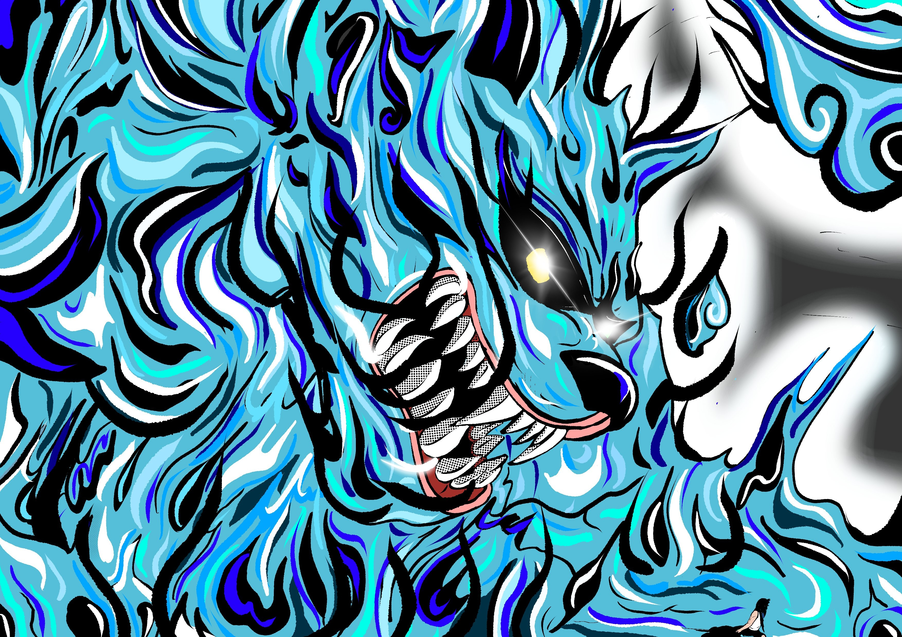
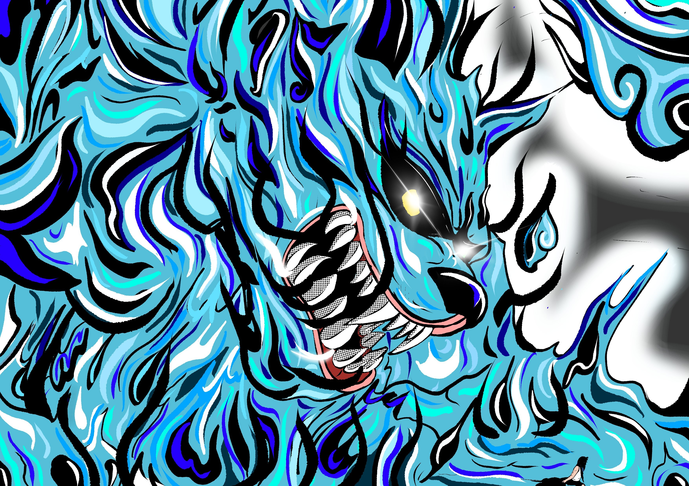

- Signification : Deux Queues
- Vrai Nom : Matatabi
- Jinchuriki connu : Yugito Nii (Kumo)
- Nature de Chakra : Katon
- Affiliation(s) : Kumo
- Apparence : Chat
- Capturer : Par Hidan et Kakuzu
Nibi
Mythologie:Dieu de l’Obscurité qui manipule les bêtes obscures et les esprits de personnes décédées.
Matatabi (⼜旅), plus communément appelé Nibi no Bakeneko (ニ尾の化け猫, le monstre-chat à deux queues).Nibi est le 2 queue du monde de Naruto. Son dernier réceptacle fût Yugito Nii une jeune femme du Pays de la Foudre. On c'est peu de chose sur ce bijuu si ce n'est qu'il est en forme de chat et qu'il crache de feu.Le démon à deux queues s'appelle Nekomata et vit à Hokkaïdo, dans la « Forêt de la Mort ». Parfois représenté avec des ailes d’ange noires,il est l’animal de compagnie du Dieu de la Mort. Nibi se nourrit de l’esprit des morts pour ensuite les invoquer lors d’un combat. Un troisième œil sur le dessus de sa tête lui permet de consumer les esprits.Nekomata est dit capable de marcher sur deux pattes. En agitant ses queues, il est capable de manipuler les morts.
 
